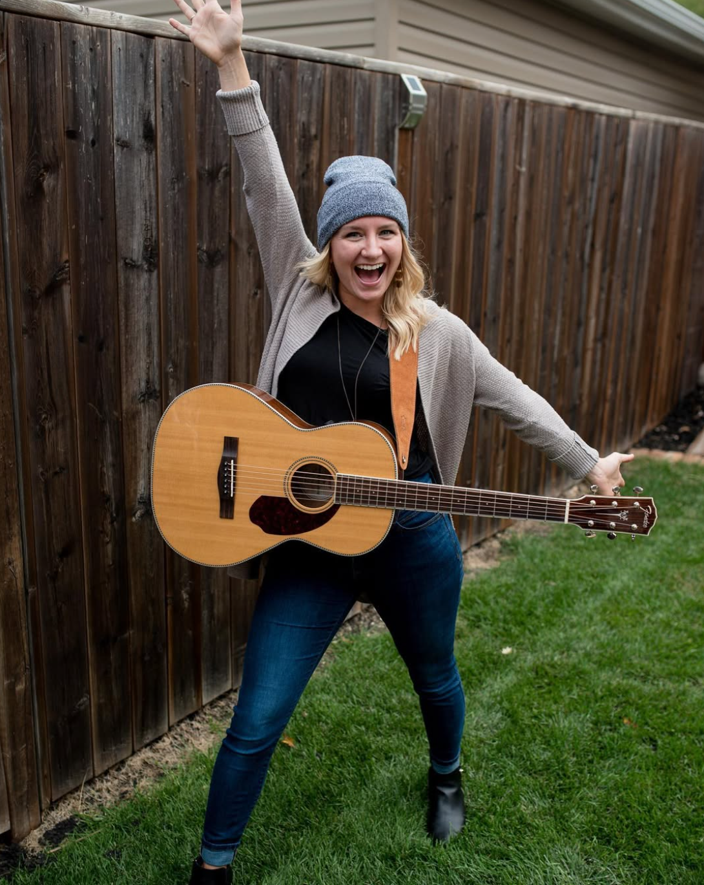
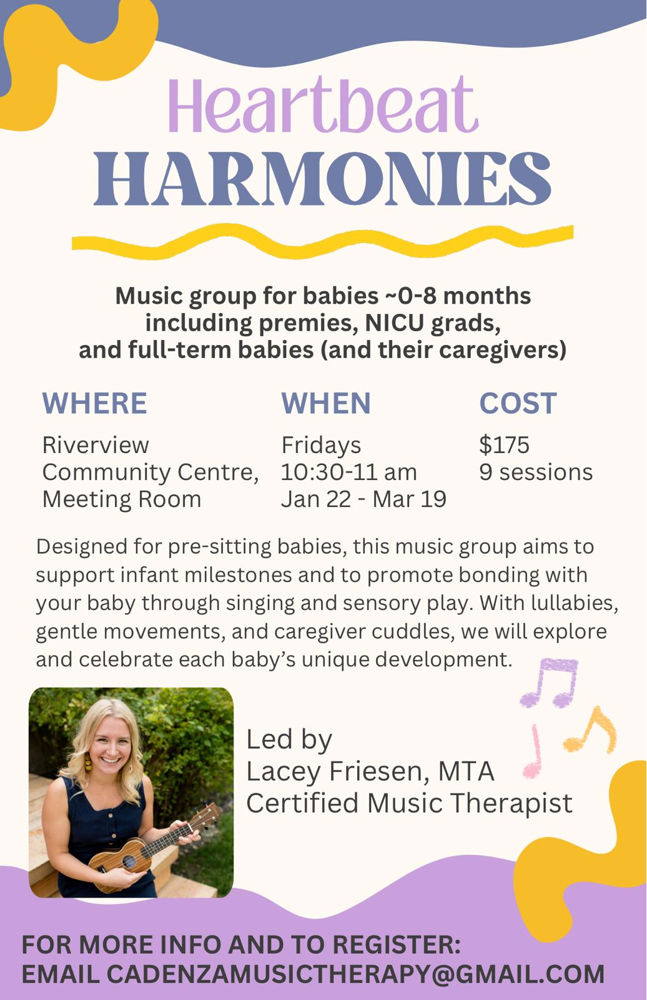

Interactive Demo
Click on any card to flip and learn more. This is a work-in-progress demo to showcase examples.

What is Music Therapy?
What is Music Therapy?
Music Therapy is the clinical use of music to accomplish individualized goals within a therapeutic relationship by a credentialed professional.
It's based on evidence that music can support emotional, cognitive, physical, and social development.

Why for Infants?
Why for Infants?
Infants' brains develop rapidly in their first months and years. Music stimulates multiple areas of the brain simultaneously.
Through singing, listening, and movement, babies develop motor skills, language, and form secure attachments with caregivers.

Caregiver Bonding
Caregiver Bonding
Music creates a safe, joyful space for you and your baby to connect. Shared musical experiences strengthen emotional bonds.
When you sing to your baby, you're not just creating memories—you're supporting their emotional development and security.

Developmental Milestones
Developmental Milestones
Each Cadenza program is designed to support specific developmental stages.
0-8 months: Rhythmic awareness, bonding, and calming. 8-18 months: Movement, exploration, and sensory development.
About This Demo
This page is used to test and showcase new ideas before they're added to the main Cadenza Music Therapy website. The flip cards above are an example of interactive content that helps visitors understand music therapy concepts in an engaging way.
You can use this demo area to:
- Test new interactive features
- Showcase program examples
- Experiment with different layouts and designs
- Get feedback before deploying to the main site